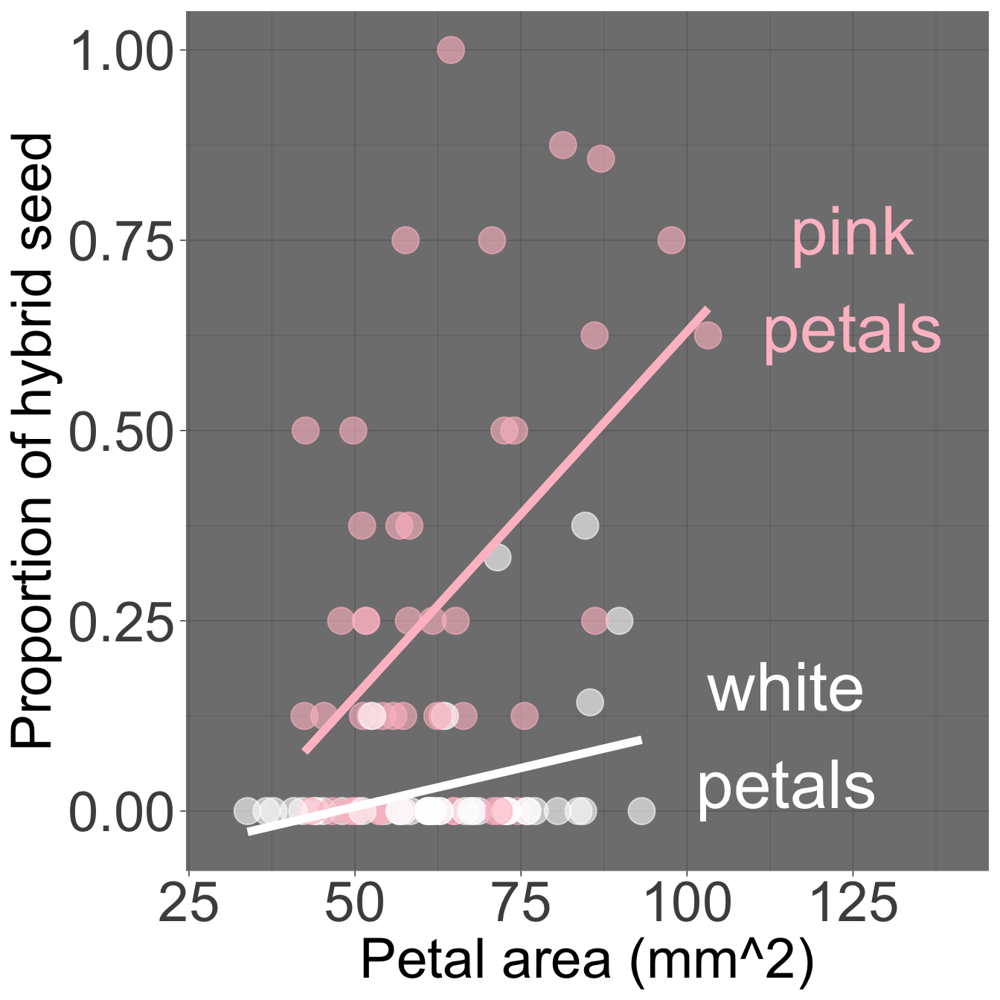

Motivating Scenario:
You noticed that two variables (e.g. petal color and petal area) are associated with the response variable (e.g. the proportion of hybrid seeds). You want to know how to build one model to put these together.
Learning Goals: By the end of this section, you should be able to:.
Fit a general linear model with two predictors
Build a model with both continuous and categorical explanatory variables with R.
Interpret coefficients in a two-predictor model
Understand the meaning of intercepts, slopes, and group differences.
Manually calculate predicted values and residuals
Predict responses for individuals and compute residuals from model output.
Code for selecting data from a few columns from RILs planted at GC
We found that both petal area and petal color predict the proportion of hybrid seeds in parviflora RILs. We’ve seen how to model each relationship individually, but what if you want to consider both traits at once? – Does petal size still matter when accounting for petal color? Or do visits ‘explain away’ the apparent association of proportion hybrid seeds with petal size?
# Code for a minimal # version of the figure belowgc_rils |>filter(!is.na(petal_color))|>ggplot(aes(x = petal_area_mm, y = prop_hybrid,color = petal_color))+geom_point()+geom_smooth(method ="lm", se = F)

Figure 1: Proportion hybrid seed as a function of petal area and petal color in parviflora RILs. Pink petals are shown in pink, white petals are shown in white. Note that this plot shows different slopes for pink and white-petaled plants, but our statistical model assumes the same slope across groups.
The “general linear model” allows us to tackle such questions by modeling multiple explanatory variables at once (Figure 1). To do so, we extend our familiar simple linear model to include both kinds of predictors at once.
In this case, each predictor gets its own coefficient:
A slope for the continuous predictor (petal area), showing how the response changes as area increases, as in the inear regression section.
A difference from the reference group for the categorical predictor (petal color), showing how average hybridization differs between pink- and white-petaled plants, a in the categorical predictor section
Mathematically, the prediction for an individual becomes:
\[\hat{y}_i = b_0 + b_1 x_{1i} + b_2 x_{2i}\] To make this more concrete, let’s define:
\(x_1\) as petal area, and where:
\(x_2\) as the indicator variable for petal color, which equals 0 for pink petaled-flowers and 1 for white-petaled flowers (i.e. pink is the “reference level”).
\(y\) as proportion of hybrid seed.
With this biological grounding we can re-cast our equation as
\[\widehat{\text{PROPORTION OF HYBRID SEED}}_i = b_0 + b_1 \times \text{PETAL AREA MM}^2 + b_2 \times \text{WHITE}_i\]
\(b_0\) is biological nonsense, of course. A flower with a petal area of zero wouldn’t have a color, let alone attract pollinators. The intercept here is a statistical and mathematical construct — not a biological claim. That’s ok! Just make sure to never use a linear model to make predictions beyond the range of your data.
\(b_0\) is the intercept — proportion of hybrid seeds for a pink-petaled plant with petal area equal to zero.
\(x_{1i}\) is petal area for plant \(i\).
\(b_1\) is the slope — the expected change in the proportion of hybrid seeds, for every unit increase petal area (as in the previous chapter). Note that this assumes that pink and white flowers have the same slope. We revisit this later.
\(b_2\) is the difference in the intercepts for white- and pink- petaled flowers i.e. the difference in the expected proportion of hybrid seeds for pink and white petaled-flowers with the same petal area.
Don’t confuse the general linear model with a generalized linear model (GLM). The general linear model (introduced above) allows for multiple predictors combined additively, while a GLM models a nonlinear response by first adding up linear contributions from predictors and then applying a transformation to match the nonlinear shape of the data.
We introduce GLMs at the end of the book. Although technically the number of hybrid seeds out of n seeds observed would have a binomial variance structure — and so a GLM might better match the data — fitting proportion with a linear model is often good enough to reveal clear biological patterns. This is very common practice, and we’ll revisit better-matching models later. I initially model this relationship as a linear model both because it is close enough, and because I want you to feel comfortable doing something good enough — even if imperfect. We’re not landing a rocket ship on the moon — we’re doing statistics. Our goal is to be “not wrong,” rather than “perfect.” 🫶
General Linear models in R
Beware of associated predictors (multicollinearity): If pink-petaled parviflora RILs tended to have bigger petals than white ones, it becomes trickier to cleanly separate their effects. The overall model predictions (\(\hat{y}_i\)) can be reliable, but the estimated coefficients (\(b_1\), \(b_2\)) can become unstable or hard to interpret. For now know that it’s fine if predictors are somewhat related, but when they are strongly correlated, we have to be cautious when interpreting individual coefficients.
The mathematical trick for estimating parameters (e.g. \(b_0\), \(b_1\), and \(b_2\)) in a general linear model exceeds what I care that you learn. So let’s find these in R with the lm() function.
To conduct a general linear model in R just add terms to your linear model: lm(response ~ explan_1 + explan_2, data = data). For our case:
lm(prop_hybrid ~ petal_area_mm + petal_color, data = gc_rils)
With the estimates above, we can return to our general linear model equation to find conditional means: \[\widehat{\text{PROPORTION OF HYBRID SEED}}_i = b_0 + b_1 \times \text{PETAL AREA MM}^2 + b_2 \times \text{WHITE}_i\]\[\widehat{\text{PROPORTION OF HYBRID SEED}}_i = -0.0894 + 0.00576 \times \text{PETAL AREA MM}^2 - 0.244192 \times \text{WHITE}_i\]
i
petal_area_mm
petal_color
prop_hybrid
1
43.9522
white
0.000
2
55.7863
pink
0.125
3
51.7031
pink
0.250
4
57.2810
white
0.000
A worked example and challenge questions
The table below shows values of the explanatory and response variables for the first four samples in the gc_rils dataset. Individuals \(i=1\) and \(i=3\) are show in black and red x’s in Figure 2, and I provide R code for calculating the prediction for individual \(i=1\) below. In the webR session below:
Find the residual for individual \(i=1\).
Find the predicted proportion hybrid seed and the residual for individual \(i=3\).
# prediction for i = 1# b0 + b1 * petal area + b2 * whitey_1 <--0.0894+5.76e-3*44-0.244*1print(paste("Prediction for individual i=1:",y_1))
[1] "Prediction for individual i=1: -0.07996"
# Residual for ind i=1e_1 <-0.00- y_1 # Residual = observed - predictedprint(paste("Residual for individual i=1:",e_1))
[1] "Residual for individual i=1: 0.07996"
# prediction for i = 3# b0 + b1 * petal area + b2 * whitey_3 <--0.0894+5.76e-3*51.7# no b2 because its pink print(paste("Prediction for individual i=3:",y_3))
[1] "Prediction for individual i=3: 0.208392"
# Residual for ind i=1e_3 <-0.25- y_3 # Residual = observed - predictedprint(paste("Residual for individual i=3:",e_3))
[1] "Residual for individual i=3: 0.0416079999999999"
Figure 2: Proportion of hybrid seeds as a function of petal area and petal color in parviflora RILs. This plot essentially replicates Figure 1, with the following caveats: it shows the same slope for each petal color, matching our model assumptions. The plot is interactive. Individuals \(i=1\) and \(i=3\) are highlighted with black and red Xs, respectively.
library(broom)# Minimal code for a figure# like that on the leftmy_lm <-lm(prop_hybrid ~ petal_color + petal_area_mm, data = gc_rils)augmented_data <-my_lm |>augment()augmented_data |>ggplot(aes(x = petal_area_mm,y = prop_hybrid,color = petal_color) )+geom_point()+geom_smooth(aes(y = .fitted),method ="lm",se =FALSE)
Wrapping Up: Two Predictors, One Model
Above, we extended a simple linear model to include two predictors — one continuous and one categorical. We could, of course, have had two categorical predictors, two numeric predictors, or more than two predictors as well. By adding multiple predictors, we can better account for biological complexity — modeling how several traits simultaneously influence a response. We can even include interactions between variables, as I show in the optional content below.
OPTIONAL EXTRA LEARNING.
Including interactions.
Earlier, we assumed that the increase in proportion of hybrid seeds with increased petal area was the same for pink and white-flowered plants, but as shown in Figure 1, this might not be true. It looks like petal area is strongly associated with proportion hybrid seed in pink, but not white-flowered plants.
We can further extend linear models to include such interactions (i.e. differences in slopes).